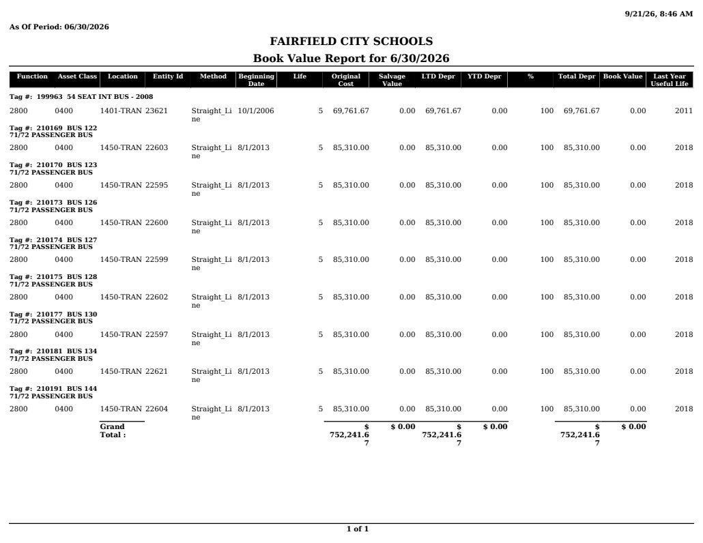

Source exhibit
BookValueReport (1).pdf
Source SHA-256: 7d79ee376ea065f9fdc7fd637626b52ad15c8ef9aeb04ea4eb64046d1315757f
Page 1

Extracted text · page 1
9/21/26, 8:46 AM As Of Period: 06/30/2026 FAIRFIELD CITY SCHOOLS Book Value Report for 6/30/2026 Function Asset Class Location Entity Id Method Beginning Date Life Original Cost Salvage Value LTD Depr YTD Depr % Total Depr Book Value Last Year Useful Life Tag #: 199963 54 SEAT INT BUS - 2008 2800 0400 1401-TRAN 23621 Straight_Li ne 10/1/2006 5 69,761.67 0.00 69,761.67 0.00 100 69,761.67 0.00 2011 Tag #: 210169 BUS 122 71/72 PASSENGER BUS 2800 0400 1450-TRAN 22603 Straight_Li ne 8/1/2013 5 85,310.00 0.00 85,310.00 0.00 100 85,310.00 0.00 2018 Tag #: 210170 BUS 123 71/72 PASSENGER BUS 2800 0400 1450-TRAN 22595 Straight_Li ne 8/1/2013 5 85,310.00 0.00 85,310.00 0.00 100 85,310.00 0.00 2018 Tag #: 210173 BUS 126 71/72 PASSENGER BUS 2800 0400 1450-TRAN 22600 Straight_Li ne 8/1/2013 5 85,310.00 0.00 85,310.00 0.00 100 85,310.00 0.00 2018 Tag #: 210174 BUS 127 71/72 PASSENGER BUS 2800 0400 1450-TRAN 22599 Straight_Li ne 8/1/2013 5 85,310.00 0.00 85,310.00 0.00 100 85,310.00 0.00 2018 Tag #: 210175 BUS 128 71/72 PASSENGER BUS 2800 0400 1450-TRAN 22602 Straight_Li ne 8/1/2013 5 85,310.00 0.00 85,310.00 0.00 100 85,310.00 0.00 2018 Tag #: 210177 BUS 130 71/72 PASSENGER BUS 2800 0400 1450-TRAN 22597 Straight_Li ne 8/1/2013 5 85,310.00 0.00 85,310.00 0.00 100 85,310.00 0.00 2018 Tag #: 210181 BUS 134 71/72 PASSENGER BUS 2800 0400 1450-TRAN 22621 Straight_Li ne 8/1/2013 5 85,310.00 0.00 85,310.00 0.00 100 85,310.00 0.00 2018 Tag #: 210191 BUS 144 71/72 PASSENGER BUS 2800 0400 1450-TRAN 22604 Straight_Li ne 8/1/2013 5 85,310.00 0.00 85,310.00 0.00 100 85,310.00 0.00 2018 Grand Total : $ 752,241.6 7 $ 0.00 $ 752,241.6 7 $ 0.00 $ 752,241.6 7 $ 0.00 1 of 1